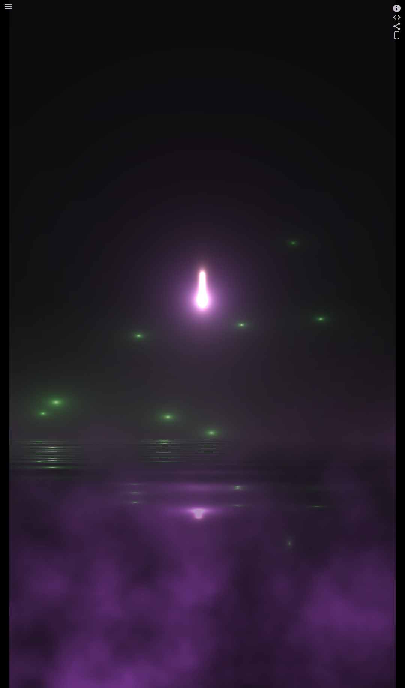

Post Processing¶
Post processing is a technique used in game development to apply visual effects to a component tree after it has been rendered. Once a frame is rendered — either directly or rasterized into an image—post processing can modify or enhance the visuals.
Post processing leverages fragment shaders to create dynamic visual effects such as blur, bloom, color grading, distortion, and lighting adjustments.
In Flame, the post processing system is modular and flexible, allowing developers to:
Define custom post processes by sub-classing the abstract class
PostProcess.Apply a single post process effect or chain multiple effects using groups.
Manage effects globally with the
CameraComponentor locally withPostProcessComponent.
Key Components of the Post Processing System¶
PostProcess: Abstract base class for defining custom post-processing effects. Implement your effect logic in itspostProcessmethod.PostProcessComponent: Applies a post process specifically to its children, enabling localized effects.CameraComponent: Applies post processes globally to the entire scene or world.PostProcessGroup: Applies multiple post processes in parallel, useful when effects can be applied independently.PostProcessSequentialGroup: Applies post processes sequentially, where each process uses the output of the previous one.
PostProcessComponent¶
A PositionComponent that applies a post-processing effect to its children.
This component is useful for applying effects such as bloom, blur, other
fragment shader effects to a group of components.
As opposed to CameraComponent.postProcess, this only applies the post
process to the children of this component. This means that if you want to
apply a post process to the whole screen, you should use
CameraComponent.postProcess instead.
During the rendering process, children of this component can verify if they
are being rendered within a post process by using
PostProcessingContextFinder.findPostProcessFromContext.
If a specific size is provided the component will be rendered with that
size, otherwise it will calculate the size based on the bounding box of
its children.
See also:
PostProcessfor the base class for post processes and more information about how to create them.PostProcessGroupfor a group of post processes that will be applied in parallelCameraComponent.postProcessfor a way to apply post processes to the whole screen.
Constructors¶
Properties¶
Creating a Custom Post Process¶
To implement a custom post process:
Subclass
PostProcess.Override the
postProcessmethod, implementing your rendering logic withrenderSubtreeorrasterizeSubtree.Optionally, implement
onLoadandupdatemethods for managing resources and updating effects each frame.
This system makes it easy to add creative and useful visual effects to your Flame game.
Example: pixelation¶
Here’s an example of creating a pixelation effect using a fragment shader:
class PostProcessGame extends FlameGame {
@override
Future<void> onLoad() async {
await super.onLoad();
world.add(
PostProcessComponent(
postProcess: PixelationPostProcess(),
anchor: Anchor.center,
children: [
EmberPlayer(size: Vector2(100, 100)),
],
),
);
}
}
class PixelationPostProcess extends PostProcess {
@override
Future<void> onLoad() async {
await super.onLoad();
_fragmentProgram = await FragmentProgram.fromAsset(
'packages/flutter_shaders/shaders/pixelation.frag',
);
}
late final FragmentProgram _fragmentProgram;
late final FragmentShader _fragmentShader = _fragmentProgram.fragmentShader();
double _time = 0;
@override
void update(double dt) {
super.update(dt);
_time += dt;
}
late final myPaint = Paint()..shader = _fragmentShader;
@override
void postProcess(Vector2 size, Canvas canvas) {
final preRenderedSubtree = rasterizeSubtree();
_fragmentShader.setFloatUniforms((value) {
value
..setVector(size / (20 * sin(_time)))
..setVector(size);
});
_fragmentShader.setImageSampler(0, preRenderedSubtree);
canvas
..save()
..drawRect(Offset.zero & size.toSize(), myPaint)
..restore();
}
}
In this example:
A fragment shader (
pixelation.frag) is loaded and used to apply a pixelation effect.The
rasterizeSubtreemethod captures the component tree rendering as a texture, which the shader uses to generate the pixelated output.The effect dynamically changes over time, creating an animated pixelation effect.
This example demonstrates how straightforward it is to add visual effects to your Flame game using the post-processing system.
1import 'dart:math';
2import 'dart:ui';
3
4import 'package:doc_flame_examples/ember.dart';
5import 'package:flame/components.dart';
6import 'package:flame/game.dart';
7import 'package:flame/post_process.dart';
8
9class PostProcessGame extends FlameGame {
10 @override
11 Future<void> onLoad() async {
12 await super.onLoad();
13
14 world.add(
15 PostProcessComponent(
16 postProcess: PixelationPostProcess(),
17 position: Vector2(0, 0),
18 anchor: Anchor.center,
19 children: [
20 EmberPlayer(size: Vector2(100, 100)),
21 ],
22 ),
23 );
24 }
25}
26
27class PixelationPostProcess extends PostProcess {
28 @override
29 Future<void> onLoad() async {
30 await super.onLoad();
31
32 _fragmentProgram = await FragmentProgram.fromAsset(
33 'packages/flutter_shaders/shaders/pixelation.frag',
34 );
35 }
36
37 late final FragmentProgram _fragmentProgram;
38 late final FragmentShader _fragmentShader = _fragmentProgram.fragmentShader();
39
40 double _time = 0;
41
42 @override
43 void update(double dt) {
44 super.update(dt);
45 _time += dt;
46 }
47
48 late final myPaint = Paint()..shader = _fragmentShader;
49
50 @override
51 void postProcess(Vector2 size, Canvas canvas) {
52 final preRenderedSubtree = rasterizeSubtree();
53
54 _fragmentShader.setFloatUniforms((value) {
55 value
56 ..setVector(size / (20 * sin(_time)))
57 ..setVector(size);
58 });
59
60 _fragmentShader.setImageSampler(0, preRenderedSubtree);
61
62 canvas
63 ..save()
64 ..drawRect(Offset.zero & size.toSize(), myPaint)
65 ..restore();
66 }
67}
The pixelation shader file:
#version 460 core
precision highp float;
#include <flutter/runtime_effect.glsl>
uniform vec2 uPixels;
uniform vec2 uSize;
uniform sampler2D uTexture;
out vec4 fragColor;
void main() {
vec2 uv = FlutterFragCoord().xy / uSize;
vec2 puv = round(uv * uPixels) / uPixels;
fragColor = texture(uTexture, puv);
}
Advanced Example: Crystal Ball¶
For a more advanced use case of post processing, check out the
Crystal Ball example, which demonstrates camera-level post
processing and chaining multiple effects using PostProcessSequentialGroup.

Here’s how multiple post-processing effects are combined on a camera:
class CrystalBallGame extends FlameGame<CrystalBallGameWorld> {
CrystalBallGame() : super(
camera: CameraComponent.withFixedResolution(
width: kCameraSize.x,
height: kCameraSize.y,
),
world: CrystalBallGameWorld(),
) {
camera.postProcess = PostProcessGroup(
postProcesses: [
PostProcessSequentialGroup(
postProcesses: [
FireflyPostProcess(),
WaterPostProcess(),
],
),
ForegroundFogPostProcess(),
],
);
}
}
In this code:
The camera applies a
PostProcessGroupcontaining multiple effects.PostProcessSequentialGroupchains two effects (FireflyPostProcessandWaterPostProcess) sequentially.An additional parallel effect (
ForegroundFogPostProcess) is applied alongside the sequential group.
You can explore the source code on GitHub.